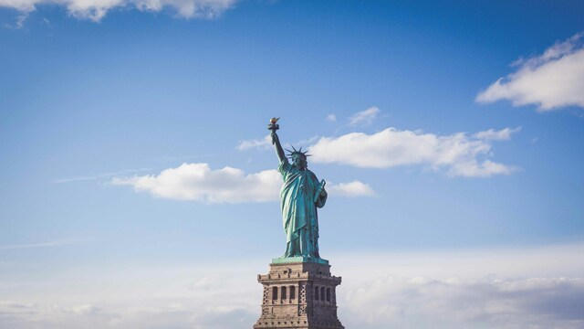
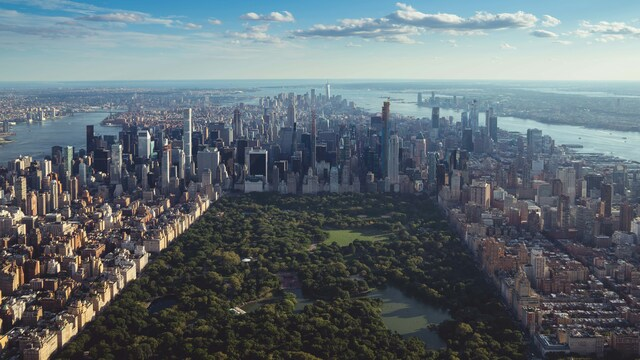
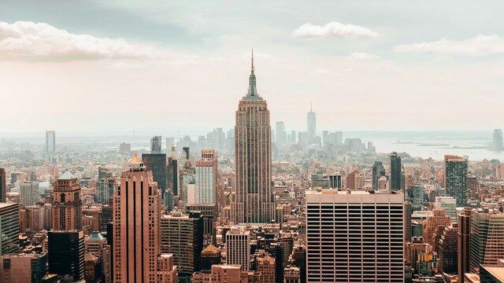
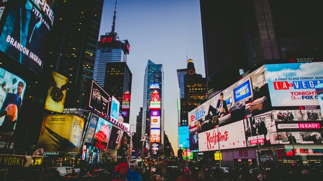

Sights

Statue of Liberty
Symbol für Freiheit und Hoffnung.
Ein Geschenk Frankreichs an die USA, mit Fackel und Tafel der Unabhängigkeit.
Erreichbar per Fähre.

Central Park
341 Hektar grüne Oase inmitten Manhattans.
Ideal zum Spazieren, Radfahren oder Picknicken - mit Seen, Wiesen und dem Central Park Zoo.

Empire State Building
Das berühmte Wolkenkratzer-Wahrzeichen New Yorks.
102 Stockwerke, atemberaubende Aussicht und ein Muss für jeden Besucher.

Times Squares
Das lebendige Herz New Yorks. Berühmt für Neonlichter, Broadway-Theater und das spektakuläre Neujahrsfeuerwerk.